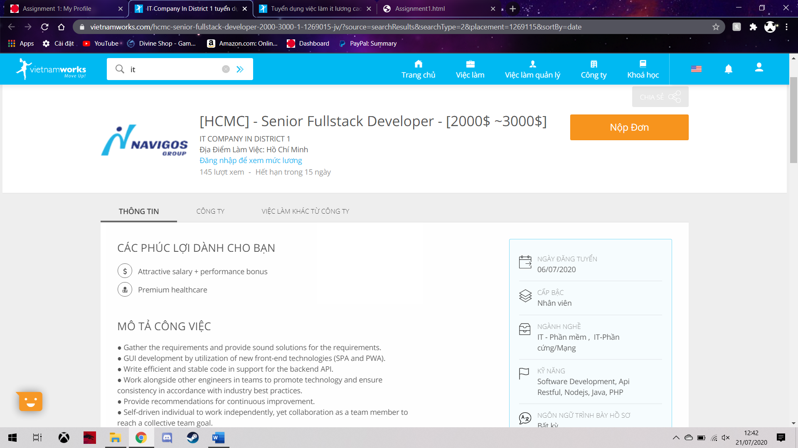
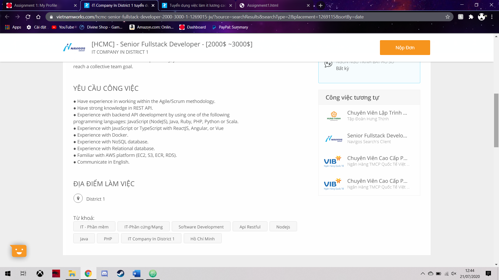

My IT Profile
Personal Information

- Fullname: Hoan Minh Khoi
- ID: s3822041
- E-mail: s3822041@rmit.edu.vn
I'm from Ho Chi Minh City, Vietnam. I can speak 2 languages Vietnamese and English. I like playing video games, in fact, when I was a high-schooler, during the summerbreak, I used to sit in front of the screen for 8-12 hours a day, sometimes I even reached 14-6 hours. I still love playing games but now 3-4 hours of screen time is my highest.
Interest in IT
- The 2 aspect that I like the most about IT is game industry and smart house setup. I like playing video game since I was a middle-schooler but the interest in smart house is recent. I pick up that interest when I started to use the Amazon Echo smart AI, Alexa. I went on YouTube and saw how people modify their house with Alexa application.
- At first, I wanted to find a university that I am able to study in international environment because I know the important of English in the future of my life. Then, my teacher and parent told me that RMIT is the best for my sake but the one who brought me to the decision was my cousin, a RMIT graduate.
- I want to learn every skill in the IT major. Although I need to focus on my strong side but I want to know everything where so that I can apply for any job in the future, even the one that required fullstack
Ideal job
 
https://www.vietnamworks.com/hcmc-senior-fullstack-developer-2000-3000-1-1269015-jv/?source=searchResults&searchType=2&placement=1269115&sortBy=date